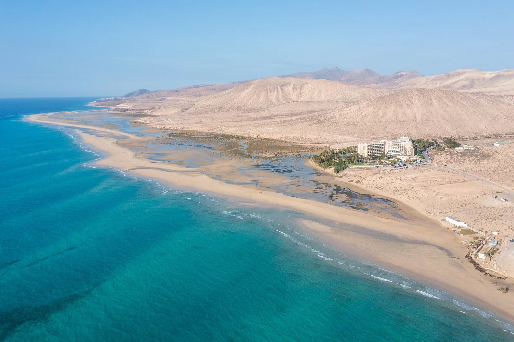

Playa de Sotavento
Fuerteventura, Espagne · kitesurf, windsurf

Lagune géante à marée haute et plage infinie au sud de Fuerteventura, hôte historique de la Coupe du monde de windsurf. Les alizés y soufflent régulièrement l’été.
- Lieu
- Fuerteventura, Espagne
- Niveau
- Intermédiaire
- Activités
- kitesurf, windsurf
- Type d'eau
- Mer / océan
- Coordonnées
- 28.14, -14.23 (position approximative du secteur)
Dangers à connaître
- Alizés forts et réguliers en été.
- Soleil et vent déshydratent vite.
Le conseil d'Ocean Buddy
Navigue à marée haute pour profiter de la lagune plate, idéale pour progresser.
Ouvrir dans Ocean Buddy Télécharger sur l'App Store
Source : Fiche Ocean Buddy · septembre 2026 · à vérifier localement.